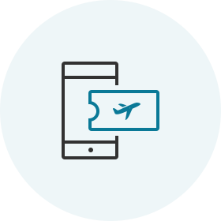
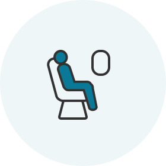

缩短值机流程！ 方便为旅行做好准备！
手机 / 网上值机
这将为您节省时间， 让您到达机场后放松身心。
如何使用
| 适用对象 | 持有有效电子机票搭乘大韩航空航班的旅客 |
|---|---|
| 营运航线 | 所有航线 |
| 值机时间 |
|
- (见 1) 往返美国、加拿大、英国和巴黎的航班 : 出发前24小时~1小时
- 确认手机/网上值机的限制
请确保您已预留充裕的时间完成安全检查和其他手续 (国际航班出发前 1 小时完成所有手续，韩国国内航班出发前 20 分钟完成所有手续)
如何值机

Step 1 搜索预订

如果您不是移动办理登机手续的屏幕区域的会员，您可以输入您的预订号码或机票号码，乘客姓名和出发日期来启动手机办理登机手续。
- 如果您在预订时输入了飞行常客号码，值机将更便利。
- 如果不显示预订，输入预定号或机票号码，然后输入出发日期和姓名。
网上值机后的机场流程
-
- 
-
01 网上值机并领取登机牌
- 准备好您的登机牌(手机或打印)，并于出发日期在机场出示。
-
- 
-
02 抵达机场
对于持有登机牌的旅客
- 当您无需托运行李时 拿好您的登机牌，直接进入大厅，无需在柜台排队。
-
当您需要托运行李时
在网上值机柜台 (见 2) 托运行李，然后进入大厅。
(见 2) 您可在仁川机场的自助托运柜台(D1~D17, E1~E17) 轻松便捷地托运行李。
对于持有交换券的旅客
- 在网上值机专用柜台换取登机牌。您也可在换取登机牌的同时托运行李。
-
-
03 安全检查和出入境
- 安保人员将对旅客和个人物品进行检查，以确保旅客和飞机的安全。
- 根据出发和到达国家的要求携带有效护照和旅行证件(签证)，然后办理出入境。
-
-
- 
-
04 登机
- 您应携带自己的登机牌。